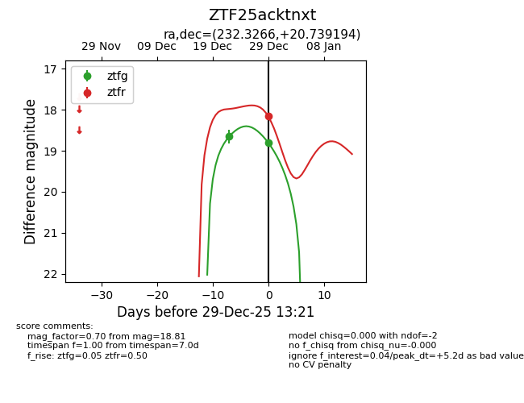
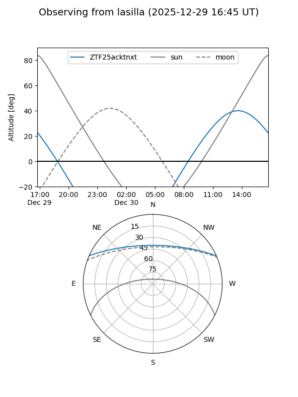
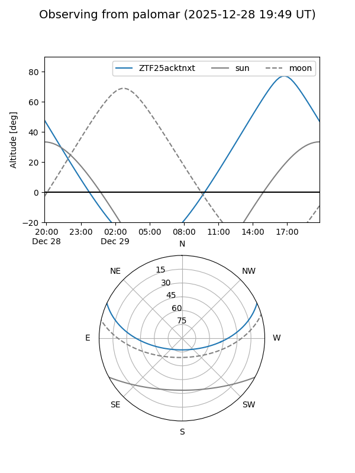
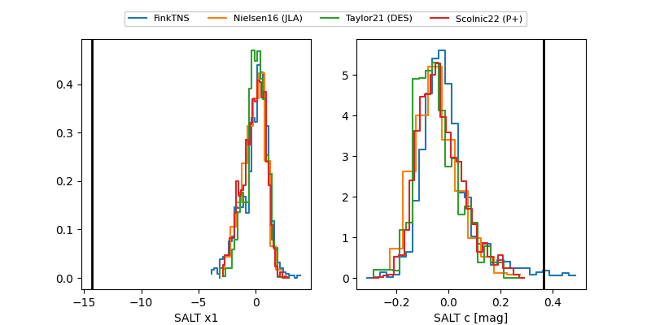

ZTF25acktnxt
Target ZTF25acktnxt at 2025-12-29 12:38
Aliases and brokers:
FINK: fink-portal.org/ZTF25acktnxt
Lasair: lasair-ztf.lsst.ac.uk/objects/ZTF25acktnxt
ALeRCE: alerce.online/object/ZTF25acktnxt
alt names
ZTF25acktnxt (ztf,fink_ztf)
Coordinates:
equatorial (ra, dec) = 232.3266,+20.73919
equatorial (HMS+DMS) = 15:29:18.38,+20:44:21.10
galactic (l, b) = (31.5783,+53.51492)
Flags:
Photometry:
last ztfg=18.65, ztfr=18.16
1 ztfg, 1 ztfr detections
Lightcurve

Visibility


Additional plots
